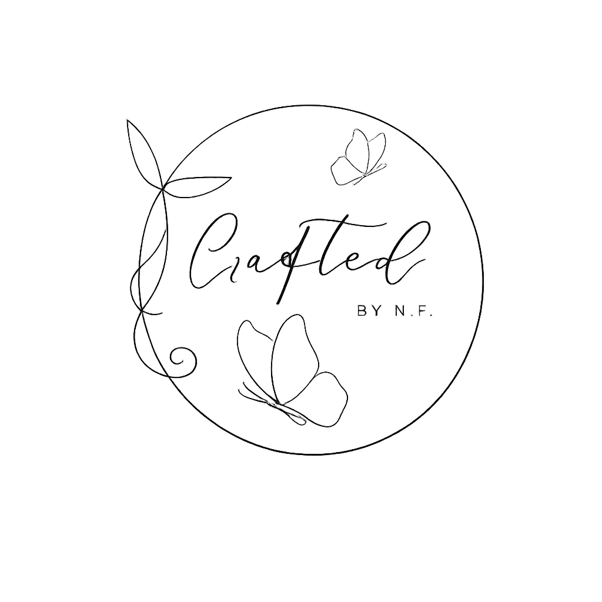

Zur StartseiteNur für den Innenbereich. Vor Feuchtigkeit und Nässe schützen. Von Feuer fernhalten. Naturmaterial arbeitet. Splittergefahr, nach Bedarf mit feinem Schleifpapier bearbeiten.
Bitte passende Batterien verwenden. Vor Feuchtigkeit und Hitze schützen. Nicht für Kinder unter 3 Jahren geeignet. Verschluckbare Kleinteile und Batterien. Brand- oder Verletzungsgefahr. Batterieentsorgung über spezielle Sammelstellen.
Nur für den Innenbereich. Nicht lebensmittelecht. Nur Dekorationsartikel. Von Wasser, Feuer und Kindern fernhalten. Bei Bruch Schnittgefahr. Reliefgießmasse kann im Restmüll entsorgt werden.
Kann bei Belastung brechen. Verletzungsgefahr. Von Feuer fernhalten. Witterungsbeständig, sollte jedoch geschützt gelagert werden.
Nicht für Kinder unter 3 Jahren geeignet. Strangulierungsgefahr. Von Feuer fernhalten. Nur für den Innenbereich. Nicht reißen oder ziehen, da sich das Material verziehen kann.
Bei Bruch Verletzungsgefahr. Vorsichtig transportieren. Temperaturschocks vermeiden. Verpackungsglas über den Glaskontainer entsorgen, ansonsten über den Wertstoffhof.
Niemals unbeaufsichtigt brennen lassen. Auf feuerfestem Untergrund abbrennen. Von Kindern und Tieren fernhalten. Zugluft vermeiden. Eventuelle Dekoration vor dem Anzünden entfernen. Flamme vorsichtig löschen.
Von Feuer fernhalten. Leicht entflammbar. Trocken lagern. Bei Feuchtigkeit besteht Schimmelgefahr. Kann allergische Reaktionen auslösen. Außer Reichweite von Kindern aufbewahren.
Nicht für Kinder unter 3 Jahren geeignet. Erstickungsgefahr durch Kleinteile. Beschädigte Teile sofort entsorgen. Kein Spielzeug. Dient ausschließlich zur Dekoration.
Zur Startseite